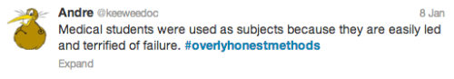
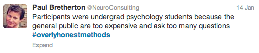

בין הרצוי והמצוי בעולם המחקר
עירא אברמוב, ספקנים בפאב 06.2014
אייקון 2014
skeptic@ira.abramov.org
בתאוריה אין הבדל בין התאוריה לפרקטיקה, בפרקטיקה כן...
- השערה, רעיון, שאלה
- הצעת מחקר
- השגת תקציב
- עריכת הניסוי וסיכום התוצאות
- שליחה לביקורת עמיתים
- סיבוב תיקונים ושיפוצים
- פירסום תוצאות
- יאללה לפרויקט הבא...
מה כבר יכול להכשל?
מחסור בזמן או תקציב


אפקט המגירה
- לא מפרסמים ניסויים שכשלו, מה שגורם לפרסום יותר הצלחות, ומטה את התמונה הכללית.
- לחלופין, מחקרים יבוצעו שוב כי לא פורסם בשום מקום שאין להם תוחלת.
מי בוחר את נושאי המחקר?
- מימון לרוב לא יכתיב את מסקנת הניסויים, אבל בהחלט את נושאי המחקר.
- יש נושאים יותר "סקסיים" מאחרים.
- מאמרים שיזכו ליותר ציטוטים.
- מאמרים שאפשר לפתח מהם פטנט.
- מאמרים שישיגו תקציב יותר בקלות.
- מאמרים בנושאים אופנתיים שיתפרסמו בסיכוי רב יותר.
- במילים אחרות, אגו וכסף עלולים לשחק תפקיד...
למי מגישים את הדו"ח?
- כמה מכובד כתב העת?
- האם עורך אותו פרופסור מתחרה?